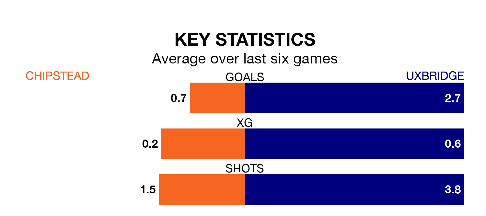

Chipstead are on a terrible run ahead of hosting Uxbridge at High Road on Saturday, with just one point collected from their last six games.
Chipstead have picked up just one draw in their last six Isthmian League Division One – South Central games, and face a Reds side whose last six games have brought four wins and one draw.
Chipstead are 19th in the table after 31 games, of which they have won six and drawn five, earning 23 points.
Uxbridge are eight places ahead of the hosts in 11th, with 13 wins and four draws putting them on 43 points.
With 39 goals in 31 games so far this season, Chipstead are scoring at below the league average rate with 1.3 goals per game. And they are conceding more than average, letting in 67 goals at a rate of 2.2 per game.
The Reds, meanwhile, are above average scorers, with 1.8 goals per game, compared to a league average of 1.7. They have also conceded 1.8 goals per game.
In the last 10 years, Chipstead and Uxbridge have played each other on six occasions. Chipstead won two of them, Uxbridge three, and they drew once.
On average, Chipstead scored 1.3 goals and the Reds 1.3 in those matches.
Their last meeting was on December 2, when Uxbridge won 2-1 at home.
Chipstead's last match was on February 27, a 1-1 draw against Leatherhead.
Uxbridge beat Raynes Park Vale 4-2 last time out, on March 9.
Updated: 15:10 (UTC), 15/03/24